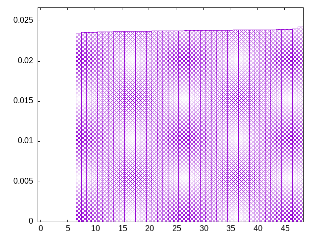
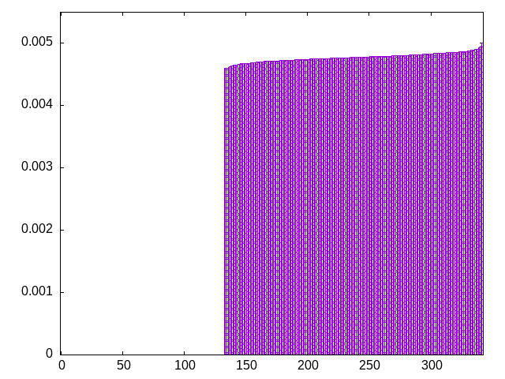
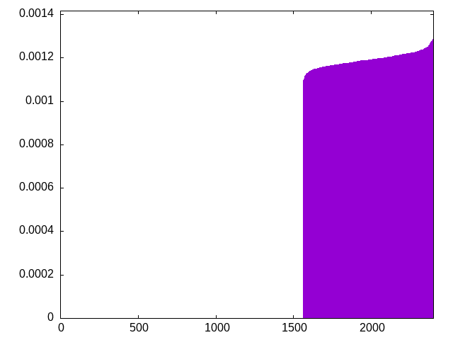
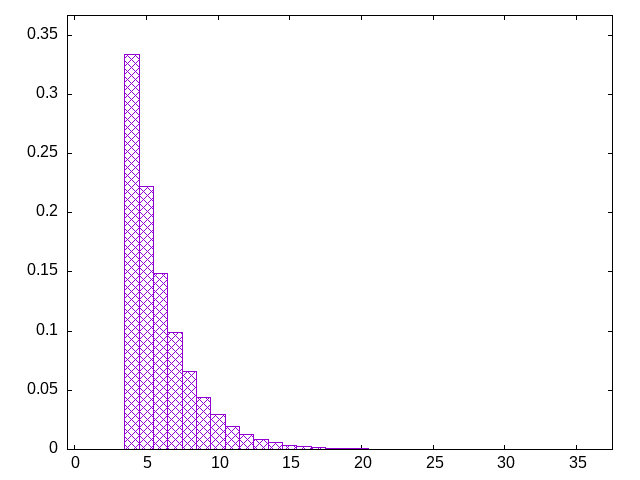

idea came from the way i choose shirts to wear
pieces are chosen from the front of the list, and the back of the list is populated with the least populous piece type (ties are broken randomly)
count: the number of pieces in the list
grab: the range from which to choose next pieces
tjoslijztlsiozljtsiolzsiotjzlitosjlzitsjzlotiszolitjzolsjtzisjloitjlzitsljozisjtzloijtlsioztjsiozlstijlsoiztjlsitzojiltszijlsotzlijsoltisjltosijztlisojztlioztlioztlsijtzsilojzilosziltozsitlzjstoizjlsozilsjtilozsjlizsoltzijolztjisoltisjztoislzojisltzjislojiztsliotjsiltosiltozsltjioztjisolztsiljozitsoljztilsojtilzstiljzoitljsoitjszliostzlojsztilsojtizsloitzjsotljsiotzliojszliojszlitozsitozjitslziostzijltszojtsizolstzijoszljiostzjlostjlzotijsolztioszjloszijtlsojilzotjslzoisjltzijsolijsoltijsztloijtsoziltszjltozjlsiojzlsotjizstojizlotijlotizlsoijlstzilstzjiltosiztoljitoslitozjlitsjlztsioljszitjolzijstzojsiltjzsoljztiojzlitsolztsijzlsoijtlszoijlzsoijtlsoztiljoztilojzitoslzijstzliotzljiostliosjtzlosjiztojiltsojltzsjioltszjlisojzisljoistjzoltsiozjltszojtlsziojtszoitlzositjzoltjszoljtiozjtiosjliztjolsziojlztsjolztsilojtzisjozitsozijstlizjoslztojiztoslijzolsjiotzslojitzljostljiszltijsotizsoljzsiljtozistlzosilzotsizjosizjoltsiojlsztjoiltjsoztjislozjisozjislztisozltsjiotszjolstzjostilojztiosljtoz
bagginess: 0.2232
bagginess6: 0.8892
distribution1_maxgap: 5.8000000000002494e-05
distribution2_maxgap: 0.023502023502023503
distribution3_maxgap: 0.004588009176018352
distribution4_maxgap: 0.001089003267009801
diversity: 6.1
entropy: 8.927
evenness_diff: 5.875
evenness_same: 0.000
maxdrought: 35.6
maxflood: 1
peakdrought: 4.0
repchance: 0.0000
seq4_coverage: 0.3499
seq4_follow: 8.115
distribution2_graph:

distribution3_graph:

distribution4_graph:

drought_graph:

similarity: (lower is more similar)
| 0.032 | shirts |
| 0.658 | ti |
| 0.740 | shift1_75 |
| 0.759 | tgm_tap |
| 0.805 | tgm_tap_pure |
| 0.860 | shift3_5 |
| 0.875 | weight_exp_pure |
| 0.890 | tgm |
| 0.899 | tgm_pure |
| 0.914 | weight_exp |
| 0.920 | bag_pure |
| 0.928 | bag |
| 0.939 | seamless_bag_pure |
| 1.074 | weight |
| 1.078 | balanced5 |
| 1.240 | weight_lin_pure |
| 1.245 | weight2 |
| 1.307 | seamless_deep_pure |
| 1.316 | shirts_smooth2 |
| 1.419 | deepbag_fixed4 |
| 1.428 | wet2 |
| 1.442 | deepbag_window4 |
| 1.502 | wet3_size12 |
| 1.504 | shift7 |
| 1.532 | shirts2 |
| 1.552 | bag2 |
| 1.579 | deepbag_fixed7 |
| 1.649 | deepbag_window7 |
| 1.725 | seamless_bag2_pure |
| 1.764 | nes_pure |
| 1.785 | deepbag_fixed10 |
| 1.808 | shift10_5 |
| 1.818 | bag3 |
| 1.853 | nes |
| 1.864 | balanced7 |
| 1.867 | balanced9 |
| 1.873 | deepbag_window10 |
| 1.895 | shift14 |
| 1.896 | shift21 |
| 1.898 | seamless_bag3_pure |
| 1.953 | bag4 |
| 2.034 | wet_pure |
| 2.061 | balanced_long_mul_pure |
| 2.164 | wet2_size100 |
| 2.171 | balanced_long_add_pure |
| 2.217 | wet |
| 2.267 | wet3 |
| 2.348 | fullrandom |
| 2.420 | fullrandom_pure |
| 4.563 | repeat_recent_pure |
| 5.137 | flatbag |
| 5.137 | flatbag_pure |
| 6.469 | repeat_last_pure |